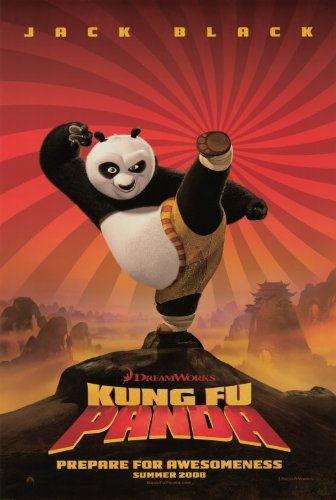

Kung Fu Panda
Plot Overview
Set in ancient China, Po the panda dreams of becoming a kung fu master. When the legendary Dragon Warrior is prophesied, Po unexpectedly finds himself chosen for the role. With the guidance of Master Shifu and the Furious Five, Po must confront the villainous Tai Lung and prove that greatness lies within, even for the most unlikely hero.
Main Characters
The film's key characters include:
- Po: A fun-loving panda who becomes the Dragon Warrior.
- Master Shifu: A skilled kung fu master who trains Po.
- Tai Lung: The powerful antagonist who seeks to claim the Dragon Scroll.
- The Furious Five: A group of kung fu masters who assist Po.
The Kung Fu Journey
Po’s transformation from an underdog to a kung fu master symbolizes the power of determination, self-belief, and teamwork. His journey is filled with challenges that test his abilities and shape his destiny, offering a powerful message to audiences about the importance of not giving up.
Spoiler Below! Hover over the space below to reveal the spoiler text!
Spoiler:Toward the end of the film, Tai Lung defeats Shifu, only to discover that the scroll is missing. Po arrives with the scroll, saving Shifu's life, and challenging Tai Lung to a fight. By the end, Po defeats Tai Lung using the Wuxi Finger Hold Technique, saving the day and being honored for his victory..
Learn More About Kung Fu Panda
Check out the official IMDb page for more details on the movie, including cast, reviews, and ratings:
Visit the IMDb Page